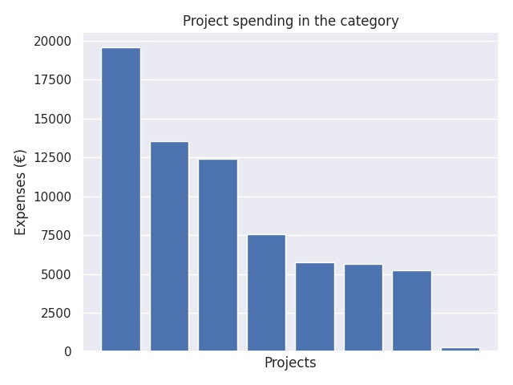

Valtionavustukset kristillisten koulujen toimintaan
Category summary
8.76K spent on average
19.6K highest spending

Reports in the category
Suomen Adventtikirkko / koulutoimi
Project name: Kristillisten koulujen toiminnan kehittäminen ja verkostotyö 2017-2018
19.6K spent
Keski-Uudenmaan kristillisen koulun ja päiväkodin kannatusyhdistys ry
Project name: Kristillisten koulujen kehittäminen ja verkostotyö 2017-2018
13.6K spent
Vaasan kristillinen koulu
Project name: Kristillisten koulujen kehittäminen ja verkostotyö 2017-2018
12.4K spent
Jyväskylän kristillisen koulun yhdistys ry
Project name: Koulujen kehittäminen ja opettajien kouluttaminen 2017-2018
7.56K spent
Oulun kristillinen koulu / Oulun kristillinen kasvatus ry.
Project name: Kristillisten koulujen kehittäminen ja verkostotyö 2017-2018
5.76K spent
Lahden kristillisen koulun kannatusyhdistys ry
Project name: - Kristillisten koulujen kehittäminen ja verkostotyö 2017-2018
5.67K spent
Porin Kristillisen koulun kannatusyhdistys ry
Project name: Kristillisten koulujen kehittäminen ja opettajien koulutus 2017-2018
5.24K spent
Rovaniemen seudun kristillisen koulun kannatusyhdistys ry
Project name: Kristillisten koulujen kehittäminen ja verkostotyö 2017-2018
290 spent